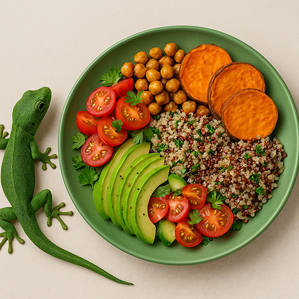

Liskon vihreä lautanen
Tervetuloa Liskon vihreälle lautaselle! 🦎💚
Hei ja tervetuloa sivustolleni! Olen intohimoinen kasvisruoan ystävä, joka on vuosien ajan kerännyt ja kokeillut herkullisia vegaanireseptejä. Halusin luoda paikan, jossa voin jakaa nämä reseptit helposti ja inspiroida muita tutustumaan kasvipohjaiseen ruokaan. Täältä löydät monipuolisia reseptejä, tietoa vegaanisesta ruokavaliosta ja vinkkejä herkulliseen, terveelliseen ja kestävään ruokailuun. Toivon, että löydät sivustoltani inspiraatiota, iloa ja uusia suosikkireseptejä! Mukavia kokkaushetkiä - ja muista, että vihreä lautanen on täynnä mahdollisuuksia! 💚✨